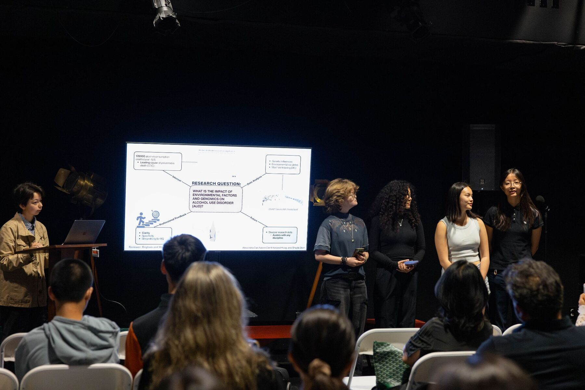

Research
Hybrid Consumer Identity in Ghanaian Fashion: The Coexistence of Sustainable and Fast-Fashion Consumption Among Young Adults
In the Pioneer Research Institute, I worked with a Johns Hopkins University professor to produce a cross-sectional study combining a literature review and online survey to investigate the existence of a hybrid consumer in Ghana that integrates both sustainable and fast-fashion clothing into their identity. With a personal interest in the sustainability of fashion and interning for a textile sustainability nonprofit, Unkara Fashion Collective, I directly drew on my own experiences and questions about the tension between ethical values and everyday consumer choices when developing my research topic.
Understanding Sectoral Responses to Tariff Uncertainty via a High-Dimensional Mediation Analysis
Driven by my interest in how large-scale environmental and economic changes alter market behavior, I worked with Dr. Runze Li to produce a primary study examining how financial fundamentals mediated the relationship between company sector and stock-market performance during major tariff-affected periods in 2025. I utilized high-dimensional mediation analysis to identify which financial variables helped explain differences in sector-level shock responses.
Environmental and Genetic Influences in Alcohol Use Disorder
Growing up in a health-conscious household, I was highly curious about how environmental and societal factors can influence one's health. This led me to work with four others to write a paper investigating how environmental and biological factors influence alcohol use and addiction. I synthesized the research on machine-learning models used to predict things like relapse and treatment outcomes, and wrote about how environmental variables interact with susceptibility from genetics.
Technical & Research Preparation
Mathematical Elements of AI
Four weeks exploring the mathematics behind neural networks through multivariable calculus and linear algebra. I implemented gradient descent and backpropagation from scratch before training CNNs on MNIST and CIFAR, reaching 99.6%+ classification accuracy. For my final project, I trained a computer-vision model to identify playing cards and integrated it into a functioning Blackjack game.
Other research-related programs
Wharton Global Youth Program, MGMT 0001: Principles of Management (Fall 2025). Analyzed business strategy through case studies including Trader Joe’s and Gong Cha; final project examined Uber’s failed China expansion and proposed a localized “Build + Borrow” strategy.
Los Angeles Behavioral Economics Laboratory: trainee, (2025-Present). Training in behavioral and experimental research methodology across topics including AI, housing, and the environment.
World Assembly of Youth, research intern (2024-2025). Wrote five 10+ page research papers on education, poverty, ICT access, leisure, and juvenile delinquency to support WAY’s youth-development work, connecting each to the UN Sustainable Development Goals.
USC Data Analytics Pre-College (Summer 2024). Studied statistical analysis and completed a final project using k-means clustering on a 2,000+ student dataset with Python, Pandas, and Tableau.
WGYP MGMT 0001 Final Project